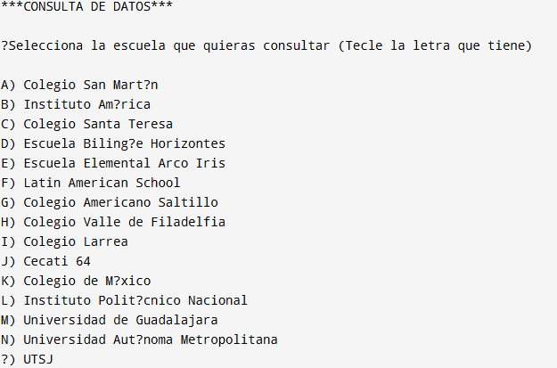

Virtualización
Uso de máquinas virtuales para simular conexion entre dos sistemas diferentes linux y windows de manera virtual

Soy un estudiante de ingenieria en Software,que me gusta aprender nuevas cosas y ademas de quea lo largo de la carrera he desarrollado algunosproyectos que me han ayudado a conocer nuevas herramientas
Imagen desplegada usando digitalocean,a si como el uso de github y comando que ayudaran a que se pudiera acceder a contenedores
Realizacion de un analizador en donde se colocaron tres tipos de analizadores que son el :lexico,semantico y sintactico que ayudaban a analizar un codigo que se colocara
Realizacion de un algoritmo de ponderacion y ademas de un sistema que ayudara a resolver ecuaciones lineales
Programa que ayude a poder teclear numeros y ayude a saber cual es el mayor y el menor
Uso de máquinas virtuales para simular conexion entre dos sistemas diferentes linux y windows de manera virtual
Aplicación en donde se muestra si se quiere acceder a personal de la escuela como estudiantes,maestros o el personal de la escuela mediante sus datos
Juego de interracion sencillo mediante botones en donde se hace la simulacion de cuando un persona va a comprar una crepa en donde se eligen los ingredientes y se agregan.
Uso de librerias en c++ y simulando la renta de un auto